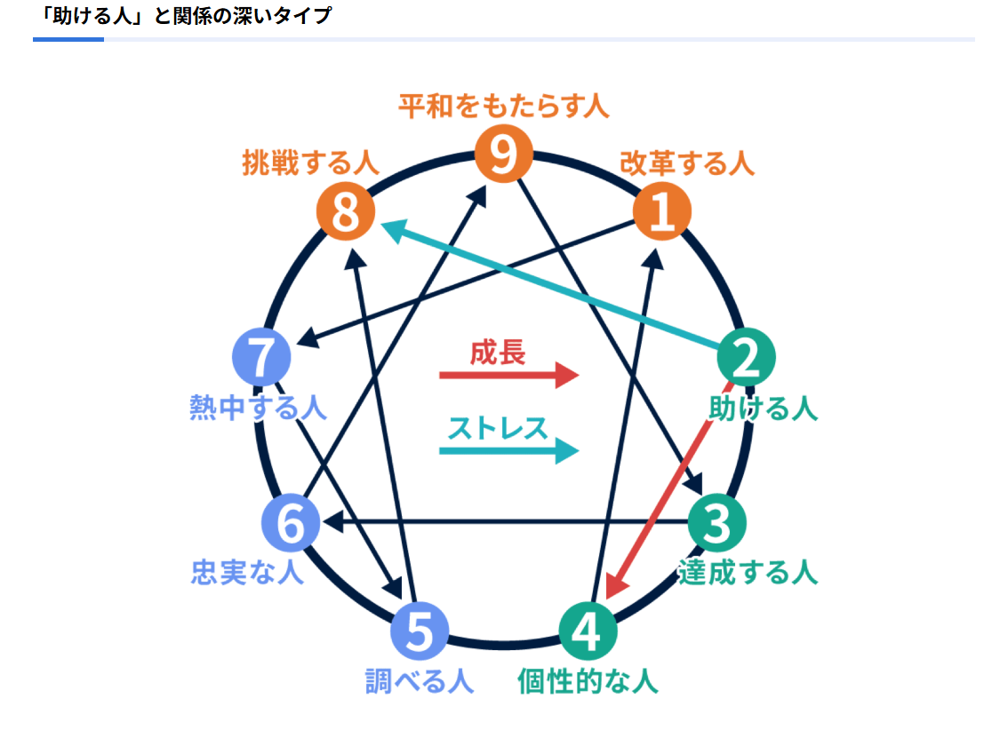

私のポートフォリオサイトへようこそ！
このサイトでは私の自己紹介や好きなもの、
AIタイプ診断、存在証明、実装サンプル、
実績などを掲載しています。
私のプログラミング学習の成果や、
趣味・好きなものなどを紹介しています。
ぜひご覧ください！
自己紹介
Self Introduction
私の名前は石垣といいます。日本国出身で現在はフリーランスエンジニアとして、プログラミング学習に取り組んでおります。 どうぞよろしくお願いいたします。
好きなもの
Favorites
好きなもの・趣味
Favorites
- スポーツ観戦
- 読書
- アウトドア
Webサイト
WebSites
AIタイプ診断
Personality Test
助ける人は、目の前にいる困っている人を放ってはおけず、 自己犠牲をいとわずにサポートしようとします。 寛容で人の気持ちを読み取るのが得意なので、 人に寄り添いながらかかわることが得意です。 そのため、人に頼られることが多く、悩み事などの相談にも 親身になって耳を傾けてサポートするため、相手も心が温かい 人と感じて心を開いてくれるでしょう。 そんな助ける人ですが、心の中では、「ひとに頼られたい」 「もっと人に尽くしたい」という気落ちを強く持っており、 人に必要とされていなくても自分が良かれと思う手助けをして しまうため、お節介と思われることも少なくありません。 相手との適切な距離感を意識することが、成長には不可欠です。 対人関係を通して、人をサポートして貢献できることを実感でき る仕事に適性があります。 人の悩みに寄り添うカスタマーサポートや接客業などが向いています。 一方で、感情面を優先するタイプなので、数字を扱ったりデータ処理 したりするような仕事はあまり得意ではありません。 就職や転職活動でも、自分よりも他人を優先してしまい、肝心の自分の 活動が進んでいないなんてことも少なくありません。 人を助けることは得意なのに、人にあまり頼らないタイプですが、情報 収集や試験対策などで人の力を借りることも重要です。たまには人を 頼ってみましょう。

存在証明
Existence Proof
強み
共感力が強く寛大な心を持っているため、人に対して思いやりを 持って献身的にかかわることができます。仕事だけでなくプライ ベートでも、困っている人を気にかけながら喜んで手を貸すので、 人から頼りになる優しい人だと思われることが多いでしょう。 裏方として、人を支えるような立場の時には、特にその力を発揮 します。
弱み
相手を過剰なまでに手助けをしてしまうことや、人に尽くして 感謝されることで自分の存在価値を見出すため、共依存状態に 陥ってしまうこともあります。また、プライドが高く自分を下 げたくないという一面があるため、人に頼むことが実は苦手です。
実装サンプル
Implementation sample
稲の生育状況
rice cultivation
2026年4月現在、種の播種を行い、発芽の段階にあります。
2026年5月現在、発芽を見ることができ、生育の段階にあります。
2026年6月現在、15cmに成長した姿を見ることができ、生育の段階にあります。
2026年7月現在、25cmに成長した姿を見ることができ、生育の段階にあります。
2026年8月現在、35cmに成長した姿を見ることができ、生育の段階にあります。
2026年9月現在、45cmに成長した姿を見ることができ、花が咲く日が1日あります。
2026年10月現在、50cmに成長した姿を見ることができ、実をつけている段階にあります。
2026年11月現在、稲穂が垂れ下がる姿を見ることができ、収穫の段階にあります。
2026年12月現在、収穫した稲を脱穀している段階にあります。
2027年1月現在、脱穀した稲を精米している段階にあります。
2027年2月このように収穫した稲が食卓に並び、1年の季節の移ろいが完成します。
2027年3月、新しい年の稲の生育が始まります。